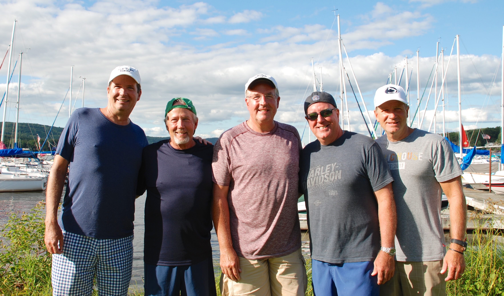

About Us
In May of 1984, John J Corcoran Sr. was diagnosed with colon cancer. Sadly, it was only six months later that he went to eternal life in heaven. He left behind, his wife, Florence, five sons and hundreds if not thousands of friends and family who knew and loved him.
In an effort to continue the celebration of his life, the first JJC Memorial Golf Outing was held on the first Friday in August of 1985 at High Mountain Golf Club in Franklin Lakes, NJ. In the years that followed, the growth in attendance of the JJC Memorial and the loyalty of the attendees has been amazing to watch year after year.
The following observation was loud and clear: The life lived by John J Corcoran Sr, his love for his wife and children and his open invitation to include all those he met as potential new members of his family is embraced by many more people than ever imagined.
The golf part of the Tournament day is symbolic of the love of the game by both John and Florence. The purpose of the golf outing is plain and simple, primarily to provide an opportunity to spend the day golfing, laughing and catching up with friends, both old and new.
We remember both John and Florence Corcoran each year as the first Friday in August brings us all together to celebrate their life and the legacy they have left; a love for golf, family and friends and fun.
We also are honored to have the opportunity to raise money for a worthy cause realizing how grateful each of us is to have this life and opportunity to spend the day with great friends. When you enter this golf outing you may be a stranger, but you leave as family!
The Emmanuel Cancer Foundation Provides New Jersey families facing the crisis of pediatric cancer a place to turn for comfort and support through professional in-home counseling and a uniquely tailored package of assistance - all free-of-charge.
What they do:
~ In-Home Counseling
~ Material Assistance
~ Emergency Financial Aid